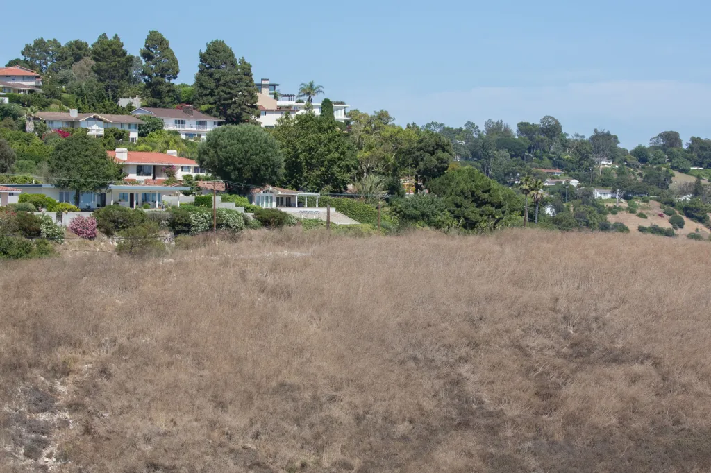

<!DOCTYPE html>
<html lang="en"></html>
<head>
    <meta charset="UTF-8">
    <meta name="viewport" content="width=device-width, initial-scale=1.0">
    <title>AffordableHouseingAboutPage</title>
    <link rel="stylesheet" href="about.css">
</head>
<body>
    <header>
        <h1>About Affordable Housing</h1>
    </header>
    <nav>
        <ul>
            <li><a href="Home.html">Home</a></li>
            <li><a href="Media.html">Media</a></li>
            <li><a href="TheProblem.html">The Problem</a></li>
            <li><a href="TheSolution.html">The Solution</a></li>
            <li><a href="TheTeam.html">The Team</a></li>
        </ul>
    </nav>
    <main>
        <h2>The summary of the Palos Verdes affordable housing situation</h2>

        <details>
            <summary><h3>The Beginning</h3></summary>
            <div class="clearfix">
                <div class="img-container">
                    
                </div>
                <div class="img-container2">
                    
                </div>
            </div>
            <p>The city of Ranchos Palos Verdes has become another hot spot for the
                Los Angeles County's affordable housing expansion. The city has been
                struggling to find a solution to the affordable housing crisis. The city 
                has proposed a plan to add 650 new homes in Ranchos Palos Verdes to help
                alleviate the housing crisis. However, Los Angeles County officials
                have been met with resistance from the residents of Ranchos Palos Verdes
                concerned about the consequences from such a large development.
            </p>
        </details>

        <details>
            <summary><h4>The Middle</h4></summary>
            <div class="center-image">
                
            </div>
            <p>Issues began to arise when the residents and the city council had similar
                concerns about forcing new comes in a densley populated area. By stalling
                the project and refining reports, officials like Anita Garner and Mayor
                Eric Alegria have been able to reduce the amound of units built.
            </p>
        </details>

        <details>
            <summary><h5>The Ending</h5></summary>
            <div class="center-image">
                
            </div>
            <p>Through successful government action, they were able to reduce the number
                of units that are able to be build while still creating many new affordable 
                housing units for low income residents. Unfortuniately, The Palos Verdes project
                is still incomplete.
            </p>
        </details>
    </main>
    <footer>
        <p>&copy; CIS 275 2025 Affordable Housing Project. All rights reserved.</p>
    </footer>
</body>
</html>
